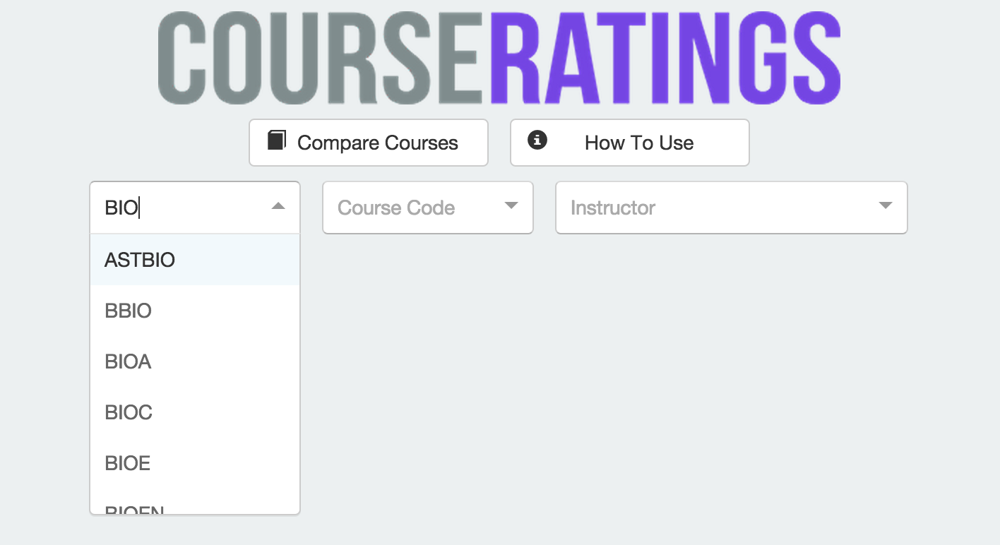
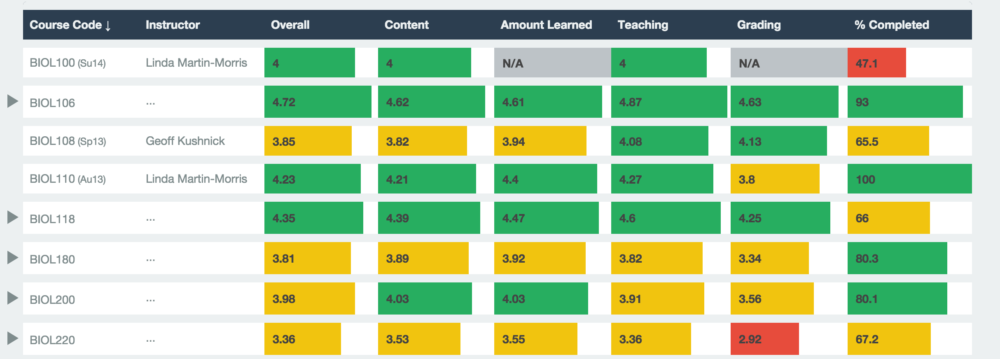
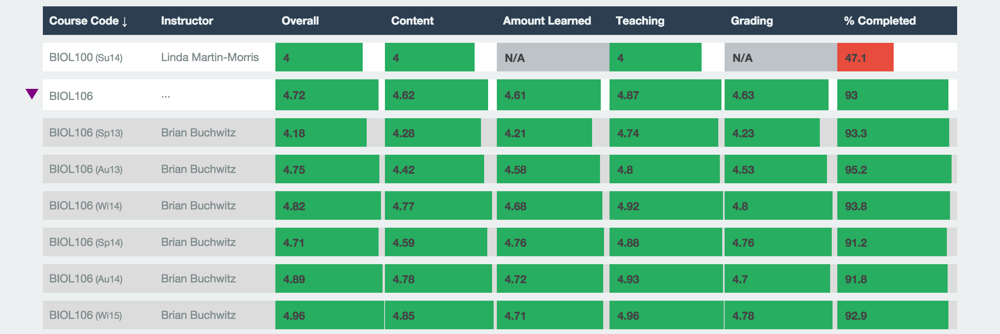
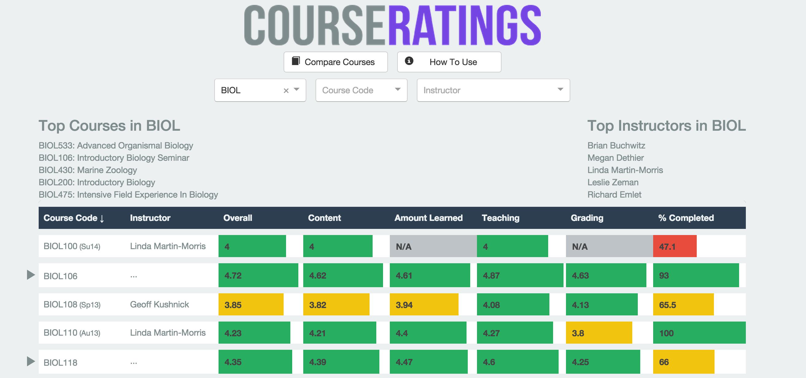
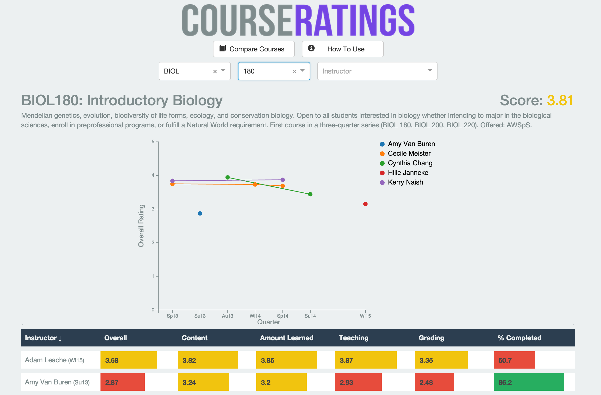
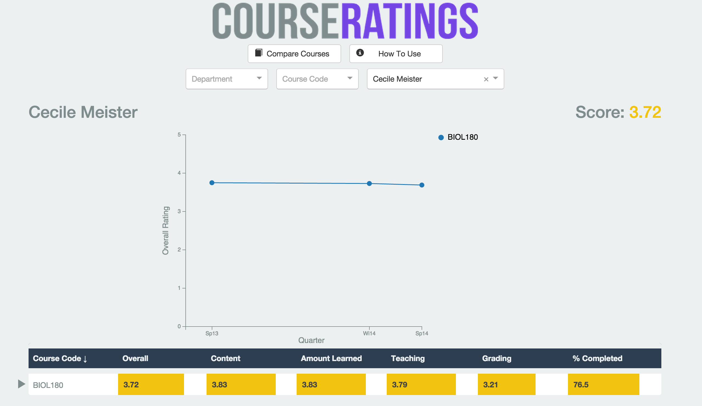
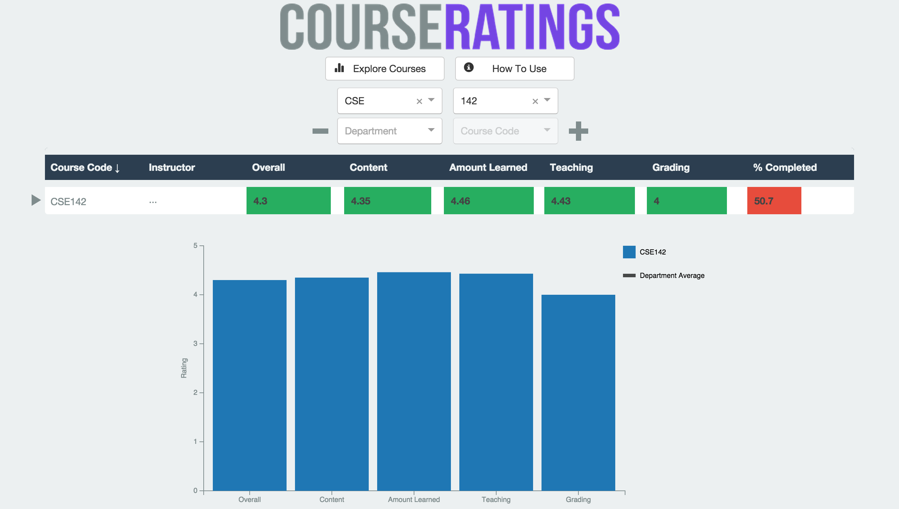
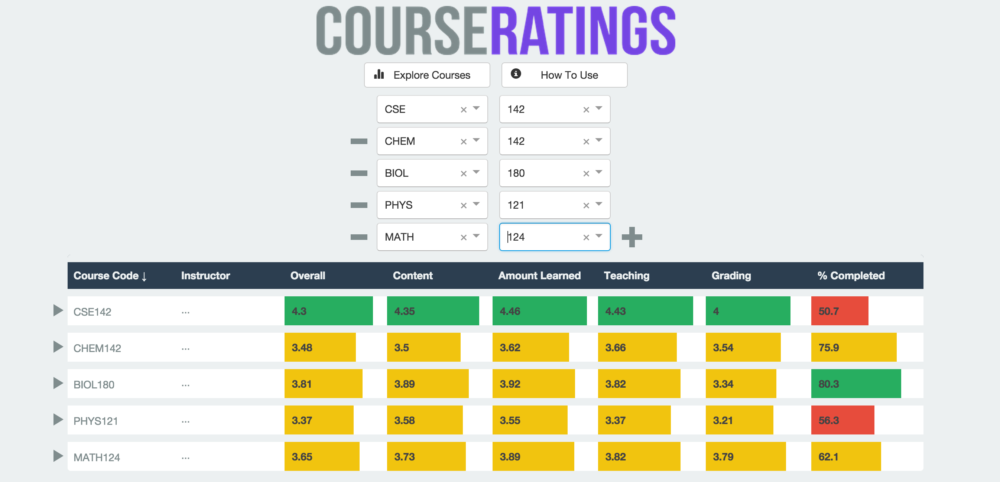
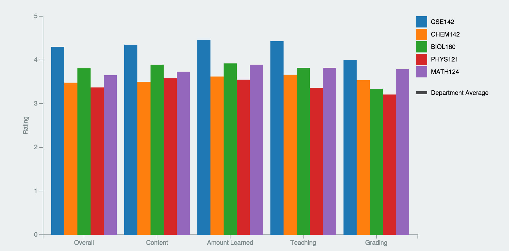
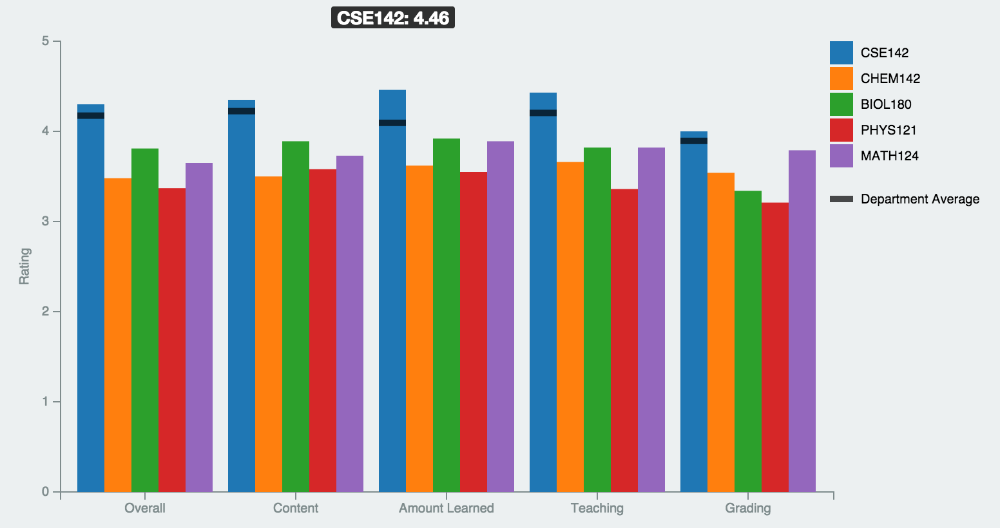

Use the search boxes to enter a department, course code or instructor. Click on each search box for a drop down list of all options or start typing to filter out only options that match. The more search boxes you fill out, the more specific your search will be.
After you fill out one or more search boxes, a table summarizing the search results will appear.
Clicking on a column name will sort by that column. An arrow to the right of the column name indicates if the column is in ascending or descending order. Clicking on the name toggles the sorting order.
Some rows in the table may have a triangle next to them. This indicates that there have been multiple offerings of that course, and this row contains the average of the ratings of all offerings. Clicking on the triangle will expand the row to show all offerings of the class. If multiple expanded rows have the same course code/instructor and time, they are different sections taught during the same quarter.
Clicking on the triangle again will collapse the rows.
Hovering over an entry in the "% Completed" column will show the number of students who filled out evaluations for that class as a fraction. Hovering over all other column entries will show the average department score for that column.
Depending on how many search boxes you filled out, one of three pages will load. These pages are similar, with a few important differences.
If you specified only the name of the department, the department page will load. It shows all courses offered by the specified department. The top 5 courses and instructors in this department are listed at the top of the page.
If you specified both the department name and course number, the course page will load. The course page lists all instructors who have taught the specified course. A line graph at the top shows the overall rating for each professor during different quarters. A maximum of 5 professors are shown on the graph.
If you specified only the name of the instructor, the instructor page will load. The instructor page lists all courses taught by the specified instructor. A line graph at the top shows the overall rating for each of the courses taught by the professor. A maximum of 5 courses are shown on the graph.
On both the course and instructor pages, the line graph displays the quarter on the X axis and the overall rating on the Y axis. Quarters for where there is no data point are left blank. Hovering over each dot displays its overall rating.
Clicking on a course code or instructor name in the table on any page will take you to the corresponding course page or instructor page respectively.
To compare courses, click on the "Compare Courses" button at the top of the page. This will take you to a new page with two drop down boxes. The first allows you to specify a department, and the second a course code. After you specify a department and course code, a table summarizing the rating of the course will appear. Click on the + button next to the drop down boxes to see a graph of the course's ratings.
The + and - buttons on either side of the drop down boxes can be used to increase and decrease the number of courses being compared respectively. The + button adds another set of drop down boxes, while the - button removes a set of drop down boxes. These drop down boxes can be used to specify more courses. When a new course is specified, or an existing course is removed or modified, the table and chart update automatically.
 Hovering over a bar will display the name of the course represented by the bar, as well as its value. It will also display a black horizontal bar over every bar representing that course. These bars display the average value for each rating in the department that offers the specified course. For example, in the following picture the cursor is hovering over the bar representing CSE 142. The black lines indicate the average overall, content, amount learned, teaching and grading ratings in the CSE department.
More information on what each bar represents can be found in the legend next to the chart.